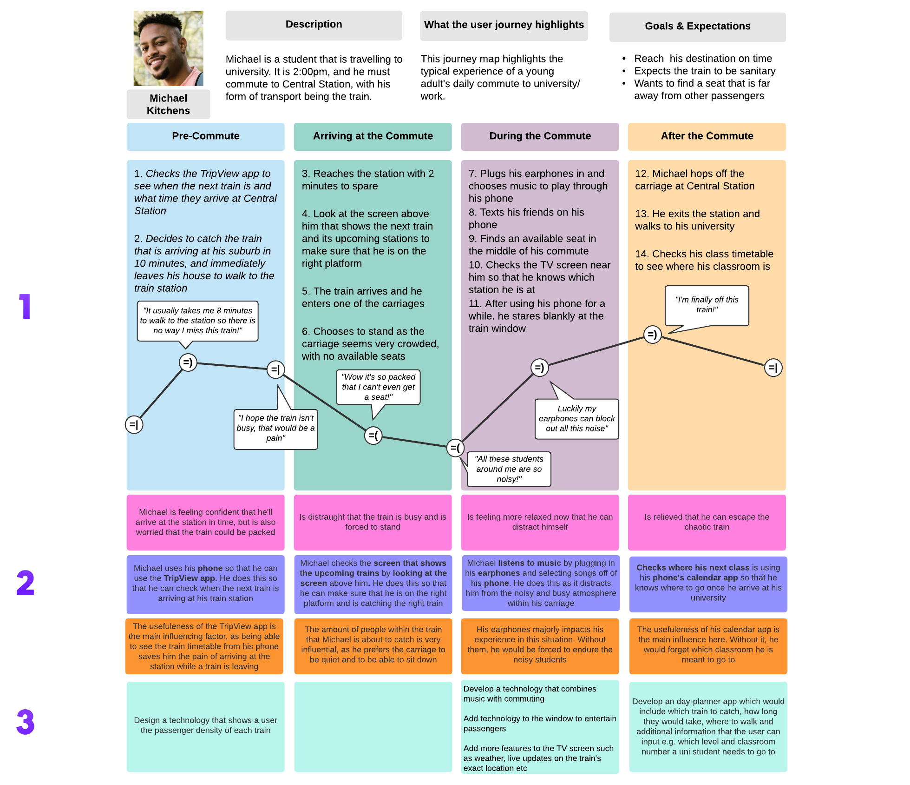
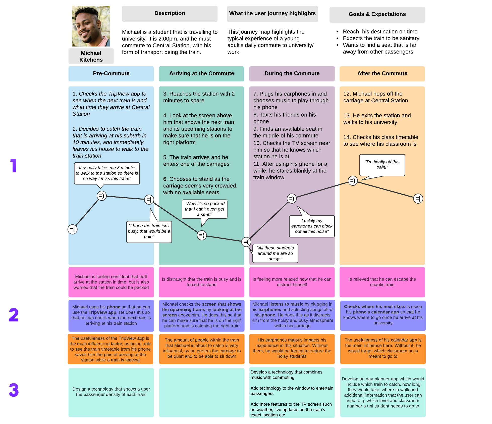
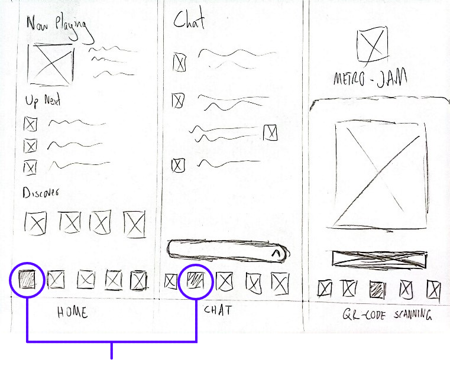

☰


A case study on designing for improved commuting experinces using a music app.
Role
UI/UX Designer, Researcher
Tools
Figma
Duration
2 months
Introduction
This case study encompasses the concept of supporting better experiences for commuting. That is, the overarching objective
was to design a digital solution that supports positive or desirable user experiences in the context of commuting. To approach
this, my design team and I decided that the most appropriate demographic to target was young adult commuters. Particularly,
we targeted young adults who would regularly travel via trains, with typical trips lasting up to an hour.
This target demographic was chosen as it best demonstrates the dullness of a typical commuting experience, with long
travel times encouraging young adults to look towards utilising digital solutions to improve their monotonous experience.
Ultimately, as commuting is a pivotal aspect for many people, it is essential to design for desirable user
experiences for individuals whilst they travel. In doing so, commuters will be influenced to maintain a more positive
attitude and outlook whilst travelling on the train, which can extend to other aspects of a commuter’s daily life.
My Role
My main roles for this project included being a user researcher and one of the key contributors to the user-experience
evaluation process, which involved roleplaying as the user persona and conducting experience prototyping. Through my
contributions, the team was able to produce a believable persona that depicted a typical young adult commuter, as well
as collect key information from user experience journals to improve the various prototypes that we had developed.
Artefacts showcased include my contributions to the final project as well as my prototype concepts that were not
included within the final deliverables but are demonstrated to further explore my thought processes as a designer.
The following skills that were used for this project will be explored:
User Research
Wireframing
Prototyping
The user persona I created for the design team showcases how I am able to effectively interpret user research data to present key knowledge of a target demographic. In doing so, I provided the team with an artefact that collects the key insights of the interviews we conducted, representing characteristics, circumstances and aspects that relate to commuting experiences.
Technology and its use whilst commuting was a prominent topic that the majority of interviewees discussed.
Therefore, it was apparent that it was beneficial to be included within the persona. In doing so, invaluable insight
into digital solution opportunities is gathered. Using interview data, the consensus was that the interviewee would
have their mobile device readily accessible whilst on the train and take quick glances at the train TV to check the
stations. Through this, I deduced that I could use the train carriage’s environment and mobile devices as an
opportunity to improve commuting experiences.
To adequately pinpoint user needs, I decided that generalising and representing the target audience’s goals was
necessary. Interview participants stated their desires to kill time and remain settled as they travel. With music
listening being the common solution to this desire, I felt that including it within the persona was crucial to
accurately identifying commuter preferences.
My perception of the user data was that participants would become easily agitated by mild changes in
their commutes. It seemed that, due to the lack of a distraction or something to ease their mind, commuters
would become restless over things such as slower train paces and overhearing other people's conversations.
By outlining these typical frustrations, greater opportunity to identify solutions to the pain points that
an everyday commuter likely experiences are uncovered.
 

User research was further manipulated to produce a high-level journey map that demonstrates experiences that the target demographic would typically encounter when commuting. My aim when creating this artefact was to allow my team to ideate as many design solutions as possible by exploring various stages of a commuter's journey and identifying any pain points.
I reflected the typical actions, thoughts and emotions represented from our user data results into a succinct timeline that details the average commuting experience. When deciding on what content was to be used for this section, I ensured that each dot point was beneficial to detailing possible pain points and design opportunities before, during and after a train ride, whilst also maintaining a clear, step-by-step timeline.
By including technology use based on user research data, I am able to deduce the digital mediums that I can use to produce a digital solution, fast-tracking the ideation process. That is, using mobile phones was a popular activity within the user research data, and therefore producing a solution that is easily accessible by phones may be a good idea. Showcasing major factors that influenced the typical commuting experience allowed me to easily distinguish aspects that need to be addressed, which is vital to develop an adequate digital solution.
Shows that I am able to break down user research data to provide my team with design opportunities that can address the pain points discovered within the journey map. Not only does this aid the ideation process of brainstorming what can be produced in relation to the design brief, but it also makes connections with the other aspects of the journey map to show how these ideas can improve commuting experiences. When forming this section, I made sure to take into account the previous segments to provide the most suitable and relevant design ideas.
After analysing and discussing the user research data with the team, it was decided that the design solution was to involve music as the primary focus due to its popularity within interviews and its accessibility among the target audience. In addition to this, a social aspect was integrated as commuters tend to text whilst travelling.
When deciding my approach to building a low-fidelity wireframe of MetroJam, I had to consider how to best structure the application to accomodate for these key themes of music and socialising. Among others, the homepage, chat and favourites screen were sketched with this in mind and explored below.

My approach to the home screen was to provide quick access to the content that users would want to see the most. Therefore,
music that was currently playing was the first element on the page, with upcoming songs beneath it. The 'Discover' section
provides greater opportunity to delve into new music and refresh the commuter's listening experience.
By implementing a 'Chat' screen, users can kill further time by socialising with other commuters within the same train.
Whether it be to discuss the song that is currently playing or general conversation, this page would cater for those
that like to message others whilst commuting.
The 'Favourites' page was implemented with the intention of providing a pleasant and uninterrupted listening experience during commutes. With its quick accessibility via the bottom navigation bar, users can easily locate and return to music that they have enjoyed whilst using the app, eliminating frustrations such as having to memorise a song’s title or an artist's name.
Various prototyping was constructed during the design process, taking into account the feedback received from usability testing as well as from internal discussions with the team. The following artefact was a high-fidelity prototype that I personally created during this process.
Collaborative Listening
Within the home screen, the “Up Next” segment allows users to instantly view all the songs that other commuters
have shared, with the “X” buttons providing an opportunity for collaboration to provide the best listening experience
possible, whilst also providing users with a sense of control and freedom to exclude songs that they dislike.
Music Discovery
Select interviewees that listened to music whilst commuting outlined that sometimes they run out of music to listen
to, and I address this by implementing a “Discover” section that showcases artists that have been trending among other
MetroJam users.
Now Playing
Deliberately placed around the region where users would rest their thumb, the "Now Playing" element is a persistent
button that allows the user to view the song that is currently playing. This was deliberately placed at the
forefront of the screen for more efficent and usable interactions, after usability testing participants concluded that
its previous positioning could be improved upon.
The social aspect of commuting that was detailed in the user research was another element that I wanted to address in this prototype. Specifically, I made sure to capitalise on opportunities that would promote commuter interactions in the MetroJam app, as shown by the chat box at the bottom of the expanded “Now Playing” screen. I felt that this would be a great addition to this screen as not only does it provide quick access to the Chat page, but it also provides users with live reactions to the song that is currently playing without ever having to leave the “Now Playing” screen by previewing the latest message.
Ultimately, this project aims to enhance the commuting experience of a typical young adult by targeting pain points such as tedious travel times, distracting surroundings, and boredom. By simply scanning or entering a QR code provided within train carriages into the MetroJam app, users can sit back and jam to trendy tunes and new genres that fellow commuters are listening to. If a user decides that they want to keep using their phone as they travel, they can freely discuss the music and other related topics with other MetroJam users on their train using the Chat feature.
© 2024